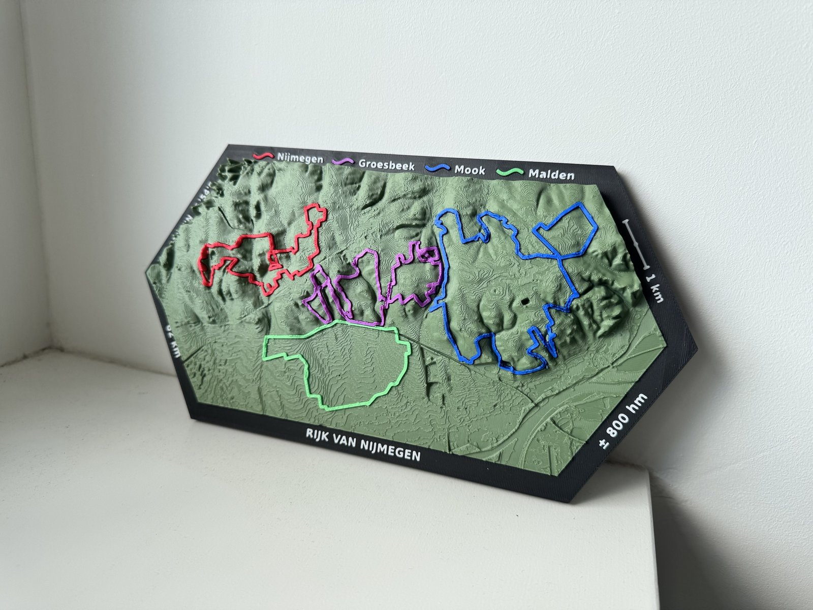

Wij maken van je fiets-, gravel- of MTB-route een tastbaar landschap. Met de echte hoogtemeters, elke bocht en die ene klim die je nooit meer vergeet.

Kies een route uit de collectie, of stuur je eigen GPX-bestand of Strava-link via een berichtje.
We koppelen je route aan echte hoogtedata en maken er een 3D-model van. Je krijgt een voorbeeld te zien voordat we printen.
Je route wordt in duizenden dunne laagjes opgebouwd, met de route in een opvallende kleur. Klaar om te geven, of om zelf te bewonderen.
Bureauformaat. Ideaal als cadeau of medaillevervanger.
Vensterbank of boekenkast. Genoeg ruimte voor elke bocht.
Een echt pronkstuk voor aan de wand of op het dressoir.